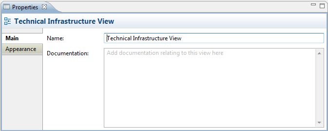
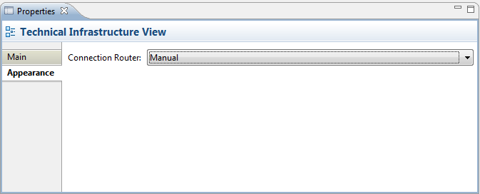

Selecting a View in the Model Tree or in a View means that you can edit or view the following properties in the Properties Window.
The Main Tab
| Viewpoint: | Select the Viewpoint for the View. For more information see Viewpoints |
| Name: | The name of the View |
| Documentation: | A space to enter some user documentation relating to the View |

Editing the "Main" Properties for a View
 In the "Documentation" text control, URLs that start with "http://" "https://" or "ftp://" will show as a hyperlink. Pressing the Ctrl / Command key will change the cursor to a "hand" cursor and you can open the link in a Browser.
In the "Documentation" text control, URLs that start with "http://" "https://" or "ftp://" will show as a hyperlink. Pressing the Ctrl / Command key will change the cursor to a "hand" cursor and you can open the link in a Browser.
The Properties Tab
For more information about creating and managing User Properties see User Properties.
The Appearance Tab
| Connection Router: | Specifies the type of connection router for the whole View. Options are: Manual - Straight line For more information see Setting the Connection Router Type for a View |

Editing the "Appearance" Properties for a View